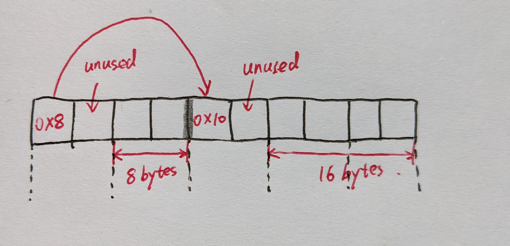
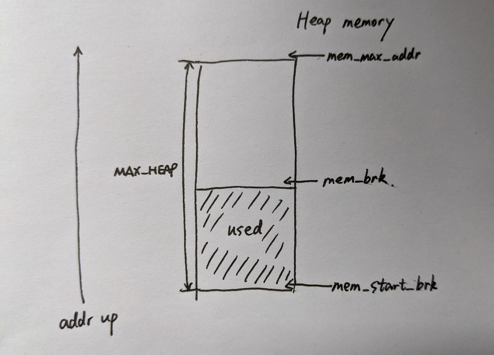
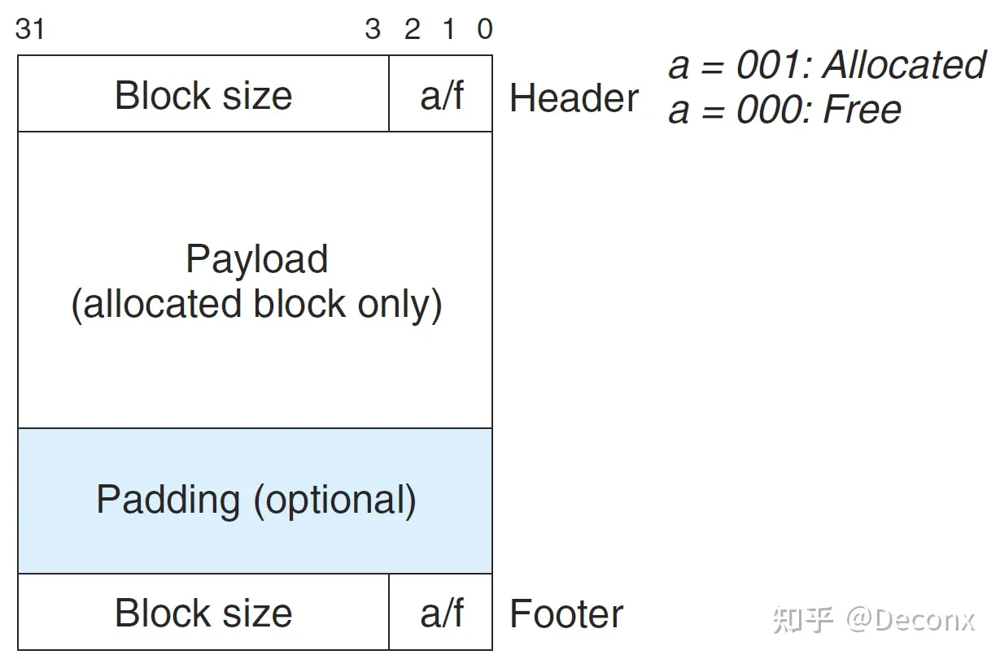
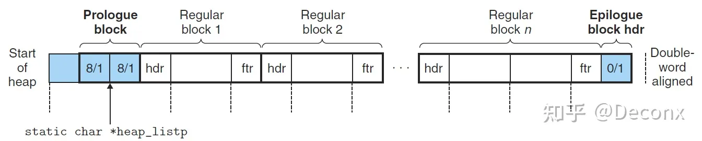
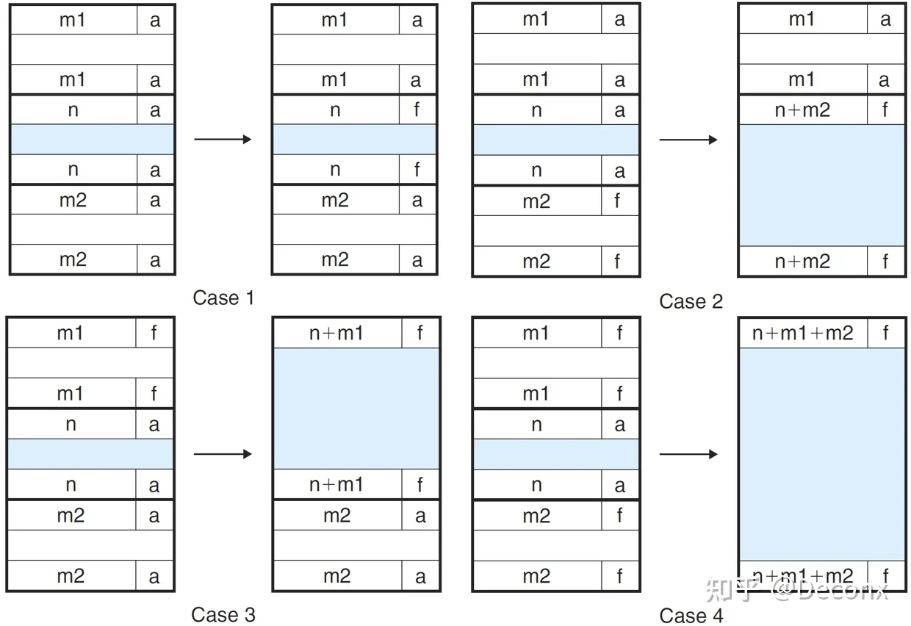
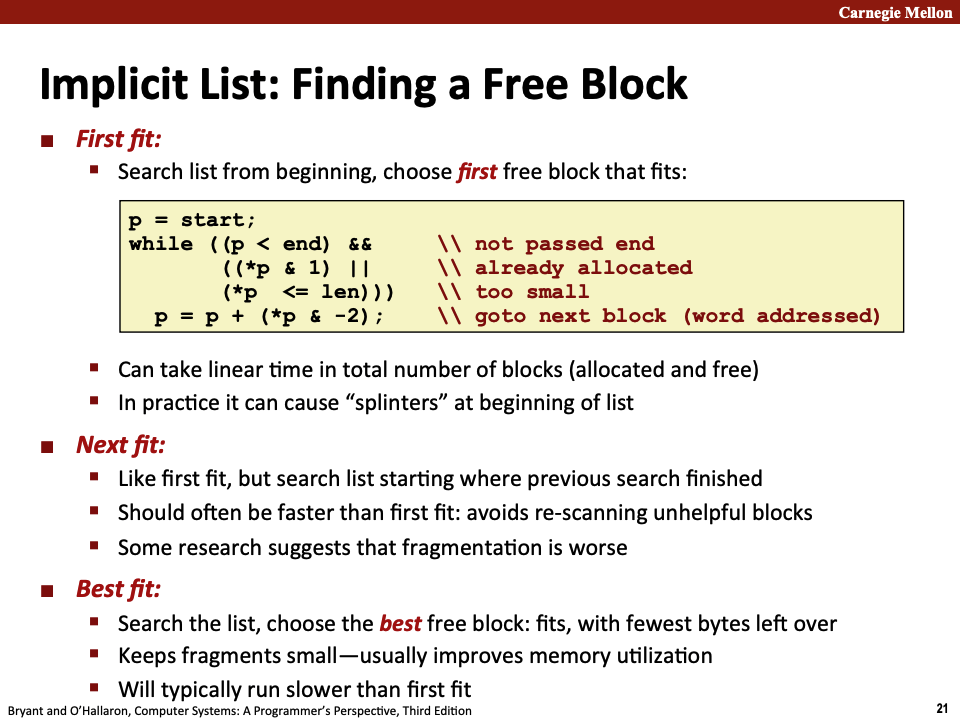
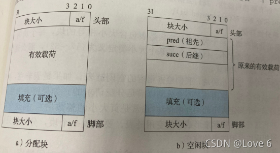
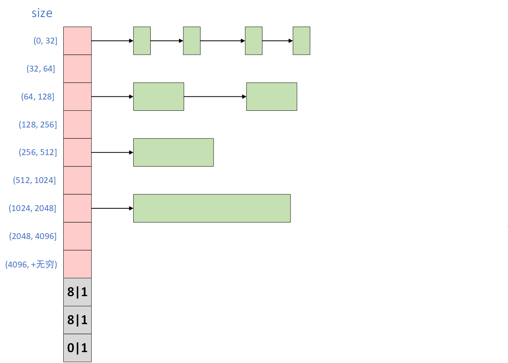
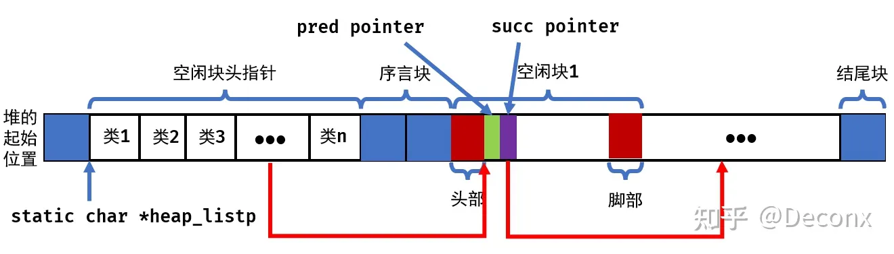
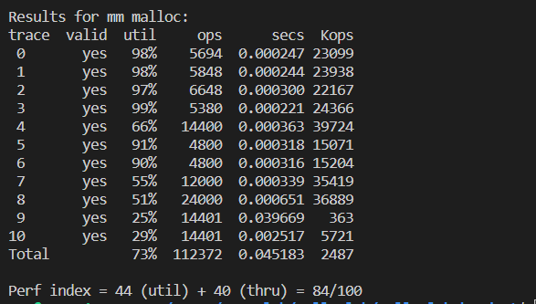

准备工作 相关的作业是在 CMU 的官网上：
Lab Assignments
在Malloc Lab一栏中，我们可以查看相关文件，例如：
作业区域 本实验的作业部分均集中在mm.c文件中，这里内部包含了我们需要完成的多个核心方法。
测试程序： 通过mdriver.c，我们可以对代码进行性能检测，可以通过 make 命令来生成相关的代码。
在编译过程中，如果遇到 /usr/include/gnu/stubs.h:7:11: fatal error: gnu/stubs-32.h: No such file or directory 相关的问题，应该是 32 位兼容的问题… 目测前往 Makefile 中，将编译选项中的 -m32 修改为 -m64 即可，接下来执行 make clean; make 即可。
由于实验所用机器是64位的，因此需要在编译的时候进行调整。
由于实验没有直接提供trace文件，因此直接使用了网上的trace。
trace文件
mdriver.c的使用参数如下：
-t <tracedir>：通过此参数，我们将指定 trace 文件所在的目录，而非使用默认的文件夹，默认的目录被定义在了 config.h 中，我们看到有：
1 #define TRACEDIR "/afs/cs/project/ics2/im/labs/malloclab/traces/"
显然要么改 config.h 内部的配置，要么运行的时候自己定义路径… 我们又不是 CMU 的学生，这些 trace 文件我们也没有…
-f <tracefile>：或者我们干脆直接指定某一个 trace 文件，而非 config.h 中的记录的默认文件
1 2 3 4 5 6 7 8 9 10 11 12 #define DEFAULT_TRACEFILES \ "amptjp-bal.rep" ,\ "cccp-bal.rep" ,\ "cp-decl-bal.rep" ,\ "expr-bal.rep" ,\ "coalescing-bal.rep" ,\ "random-bal.rep" ,\ "random2-bal.rep" ,\ "binary-bal.rep" ,\ "binary2-bal.rep" ,\ "realloc-bal.rep" ,\ "realloc2-bal.rep"
-h：打印命令行参数使用帮助-l：同时测试我们的 mm_malloc 和 libc 标准库中的对应函数，并进行比较-v：在一个紧凑的表格中打印出每个跟踪文件的性能表现 -V：更多的中间过程输出，在处理每个跟踪文件时打印额外的诊断信息。在调试过程中很有用，我们可以通过打印的信息确定是哪个跟踪文件导致你的 malloc 失败
实验内容 作业要求 主体函数 我们需要实现的主体函数有如下四个：
1 2 3 4 int mm_init (void ) ; void * mm_malloc (size_t size) ; void mm_free (void *ptr) ; void * mm_realloc (void * ptr, size_t size) ;
在mm.c文件中，已经预先提供了一个最简单的malloc方法，在PDF中，作者推荐我们去尝试不同的动态内存分配可能。以上四个函数的要求如下：
P. S. 注意到新内存块的地址可以和旧内存块的地址一致，也可以不同，取决于你的实现、旧内存块内部碎片大小和本次 realloc 请求的 size 大小。
新内存块内部存储的内容应当和旧内存块一致，取决于新旧大小的最小值。
例如，原来有一个 8 字节的旧内存块，现在我们将其变为 12 字节，则有前 8 字节保持不变而后 4 字节未初始化。
或者，原来有一个 8 字节的旧内存块，现在将其大小变为 4 字节，则新内存块中的头部 4 字节应当和旧内存块一致。
内存检查器 除了要实现以上分配内存的函数外，还需要实现内存一致性的检查器。在运行时，该检查器将对整个堆的内存空间进行扫描，例如需要检查的问题包括但不限于：
是否在空闲列表中的每一个内存块均被标记为空闲状态？
是否存在连续的空闲内存块忘记被合并了？
空闲列表在每次操作后是否包含了所有的空闲内存块？
空闲列表中的指针是否指向了有效的空闲内存块？
已分配的内存块之间有没有出现重叠的异常状况？
在堆内存块中的指针是否指向了有效的对内存地址？
PDF 中希望我们将内存检查器写作 int mm_check(void)，一并写在 mm.c 文件中，并希望当内存通过检查时，该方法返回一个非 0 值。当内存检查未通过时，也可打印对应的错误信息方便排查。
P. S. 最终对 mm.c 进行性能测试时，务必将 mm_check 内存检查器的相关调用加上注释，以避免不必要的性能损失。
示例理解 在初始的mm.c程序中，mm_malloc和mm_realloc已经被给出，并且定义了几个宏：
1 2 3 4 5 6 #define ALIGNMENT 8 #define ALIGN(size) (((size) + (ALIGNMENT-1)) & ~0x7) #define SIZE_T_SIZE (ALIGN(sizeof(size_t)))
其中，ALIGN(size) 的目的是将size进行双字对齐操作，而SIZE_T_SIZE进一步使用了该操作，应该是用来表示内存块的头部大小的。
因此在我们正式计算一个内存块的大小时，应当是头部大小对齐后的值加上有效载荷的大小后再进行对齐的值。隐式的空闲链表分配如下所示：
初始设置的mm_malloc函数如下：
1 2 3 4 5 6 7 8 9 10 11 12 13 14 void *mm_malloc (size_t size) { int newsize = ALIGN(size + SIZE_T_SIZE); void *p = mem_sbrk(newsize); if (p == (void *)-1 ) return NULL ; else { *(size_t *)p = size; return (void *)((char *)p + SIZE_T_SIZE); } }
P. S. 可以看到这里面申请的 size 看起来应该就是有效载荷的大小，并不计入头部块大小等内容，和上文中给出的图还是有一点小出入的，需要注意一下。
由于使用了 size_t 作为头部块大小的描述方式，在 32 位系统下为 4 字节，在 64 位下应当为 8 字节，再加上头部和有效载荷均应该是 8 字节对齐的（第一个内存块的头部是落在堆内存空间的头部，而堆内存空间是通过 malloc 分配的，自然也应当是 8 字节对齐的，详情见下文）
也许应该画成下面这个样子比较合适？
64 位系统下

32 位系统下
有兴趣的话还可以去 memlib.c 中了解一下 mem_sbrk 是如何实现的：
1 2 3 4 5 6 7 8 9 10 11 12 13 14 15 16 17 18 19 20 21 22 23 24 25 26 27 28 29 30 31 32 33 static char *mem_start_brk; static char *mem_brk; static char *mem_max_addr; void mem_init (void ) { if ((mem_start_brk = (char *)malloc (MAX_HEAP)) == NULL ) { fprintf (stderr , "mem_init_vm: malloc error\n" ); exit (1 ); } mem_max_addr = mem_start_brk + MAX_HEAP; mem_brk = mem_start_brk; } void *mem_sbrk (int incr) { char *old_brk = mem_brk; if ((incr < 0 ) || ((mem_brk + incr) > mem_max_addr)) { errno = ENOMEM; fprintf (stderr , "ERROR: mem_sbrk failed. Ran out of memory...\n" ); return (void *)-1 ; } mem_brk += incr; return (void *)old_brk; }
注意到 mem_brk 是已经使用的堆内存的上限指针，而非堆内存的最大地址。模型如下所示，注意指针指向的位置：

简单的说，该函数根据传入的 incr 大小，修改堆已使用内存的大小（堆内存本身的大小被固定为 MAX_HEAP，查询 config.h 可知默认为 20MB），将堆已使用内存的上限指针移动，如果成功则返回修改前的堆上限位置的指针，否则返回 -1。
在上面 mm_malloc 的例子中，完成扩容后，我们修改的位置指向了刚申请的新内存空间，在刚申请的内存空间中进行处理没有数据污染的风险。
接下来，我们看 mm_realloc 函数，其功能为修改指向的内存块的大小：
1 2 3 4 5 6 7 8 9 10 11 12 13 14 15 16 void *mm_realloc (void *ptr, size_t size) { void *oldptr = ptr; void *newptr; size_t copySize; newptr = mm_malloc(size); if (newptr == NULL ) return NULL ; copySize = *(size_t *)((char *)oldptr - SIZE_T_SIZE); if (size < copySize) copySize = size; memcpy (newptr, oldptr, copySize); mm_free(oldptr); return newptr; }
他甚至只在头部嵌进去了块大小，也没见加入已分配的标记位… 也不知道这么搞怎么区分空闲块和已分配块…
策略与代码 隐式空闲链表 在书中已经有了一个隐式空闲链表的实现示例（p897），只是没有mm_realloc find_fit place 这些功能。
空闲块的组织 每个空闲块的结构如下：

脚部与头部是相同的，均为- 4 个字节，用来存储块的大小，以及表明这个块是已分配还是空闲块
由于要求块双字对齐，所以块大小就总是 8 的倍数，低 3 位总是为 0，因而，我们只需要利用头部和脚部的高 29 位存储块的大小，剩下 3 位的最低位来指明这个块是否空闲，000 为空闲，001 为已分配

堆有两个特殊的标记：
序言块（Prologue Block）: 大小为8个字节，由一个头部和一个脚部组成
结尾块（Epilogure Block）：大小为0的头部
为了消除合并空闲块时边界的考虑，将序言块和结尾块的分配位均设置为已分配。为了保证双字对齐，在序言块的前面还设置了 4 个字节作为填充。分配器使用一个单独的私有全局变量 heap_listp，他总是指向序言块。
根据上述结构，可以定义一些方便操作的宏：
1 2 3 4 5 6 7 8 9 10 11 12 13 14 15 16 17 18 19 20 21 22 23 24 25 26 27 #define WSIZE 4 #define DSIZE 8 #define CHUNKSIZE (1 << 12) #define MAX(x, y) ((x) > (y) ? (x) : (y)) #define PACK(size, alloc) ((size) | (alloc)) #define GET(p) (*(unsigned int *)(p)) #define PUT(p, val) ((*(unsigned int *)(p)) = (val)) #define GET_SIZE(p) (GET(p) & ~0x7) #define GET_ALLOC(p) (GET(p) & 0x1) #define HDRP(bp) ((char*)(bp) - WSIZE) #define FTRP(bp) ((char*)(bp) + GET_SIZE(HDRP(bp)) - DSIZE) #define NEXT_BLKP(bp) ((char*)(bp) + GET_SIZE(((char*)(bp) - WSIZE))) #define PREV_BLKP(bp) ((char*)(bp) - GET_SIZE(((char*)(bp) - DSIZE)))
以及一些变量的定义：
WSIZE 代表了一个字的大小即 4 字节，DSIZE 代表了一个双字的大小即 8 字节。初始空闲块的大小和扩展堆时的默认大小为 CHUKSIZE。
PACK 通过位运算，将块大小和分配标识符结合，生成一个字，可以将其存储在头部和脚部中。
GET 用于读取参数 p 引用的字，PUT 用于存放在参数 p 指向的字。更进一步的，通过适当的位运算，使用 GET_SIZE，可以将 p 引用的字中的块内存大小信息提取出来，使用 GET_ALLOC 可以将分配标识提取出来。
假设 bp 指向的是有效载荷首地址，则我们通过对应的偏移量，使用 HDRP 可以确定头部指针，使用 FTRP 可以确定脚步指针。
相似的，我们通过偏移量（这也就是隐式空闲链表的精髓，并没有指针链接各个节点，一切都是通过偏移量实现的）可以确定后面的块和前面的块的指针，通过 NEXT_BLKP 和 PREV_BLKP 来实现，(char *)(bp) - WSIZE 指向的是当前块内存的头部，而 (char *)(bp) - DSIZE 指向的是前一块内存块的脚部。
合并与分割 初始化堆 在初始化堆时，按照书中所给的模型，我们首先应当划分出序言块、结尾块以及初始位置的空间（如之前空闲链表的蓝色位置所示），这部分的内存需要调用mem_sbrk进行申请。
接下来，我们再将对应内容填入即可，正如上图中所示的，第一个字是一个双字边界对齐的不使用的填充字，用 0 填充即可，序言块中头部尾部分别是 8/1 和 8/1，结尾块为 0/1 的头部。
最后我们还将调用 extend_heap，将堆扩展 CHUNKSIZE 字节，并创建初始的空闲块。
1 2 3 4 5 6 7 8 9 10 11 12 13 14 15 16 17 18 19 20 21 int mm_init (void ) { if ((heap_list = mem_sbrk(4 *WSIZE)) == (void *) - 1 ) return -1 ; PUT(heap_list, 0 ); PUT(heap_list + (1 * WSIZE), PACK(DSIZE, 1 )); PUT(heap_list + (2 * WSIZE), PACK(DSIZE, 1 )); PUT(heap_list + (3 * WSIZE), PACK(DSIZE, 1 )); heap_list += (2 * WSIZE); if (extend_heap(CHUNKSIZE/WSIZE) == NULL ) return -1 ; return 0 ; }
扩展堆的实现：
1 2 3 4 5 6 7 8 9 10 11 12 13 14 15 16 17 18 19 20 21 void *extend_heap (size_t words) { char *bp; size_t size; size = (words % 2 ) ? (words + 1 ) * WSIZE : words * WSIZE; if ((long )(bp = mem_sbrk(size)) == -1 ) return NULL ; PUT(HDRP(bp), PACK(size, 0 )); PUT(FTRP(bp), PACK(size, 0 )); PUT(HDRP(NEXT_BLKP(bp)), PACK(0 , 1 )); return coalesce(bp); }
这个函数应该是每次空闲空间不足时，向堆内存申请更多内存用的。每次申请偶数个字的内存空间，以确保内存是对齐的，随后我们将新分配的内存按照空闲块的标准进行头部和脚部的标记。
值得注意的是，扩展堆每次在原始堆的尾部申请空间，mem_sbrk函数返回指向旧堆尾部的指针，因此，可以直接将原始堆的尾部位置设置新空闲块的头部。我们直接将 bp 定为新申请空闲内存的有效载荷，因此写其头部的时候会直接覆盖刚才的结尾块，妙啊～以后循环往复，我们创建新的空闲块，抹掉上次的结尾块改成头部，自己再最后加一块结尾块上去…
当然新申请的空闲内存块可能和前面的空闲块有需要合并的情形，有可能前一个堆以一个空闲块结束，因此我们需要调用 coalesce 函数合并两个空闲块，并最终返回合并后的块的指针。关于合并的具体细节，留到下一部分再聊…
接下来考虑一下free的实现，设置一下头部和尾部即可，free完后要注意合并空闲块
1 2 3 4 5 6 7 8 9 10 11 12 void mm_free (void *ptr) { if (ptr == 0 ) return ; size_t size = GET_SIZE(HDRP(ptr)); PUT(HDRP(ptr), PACK(size, 0 )); PUT(FTRP(ptr), PACK(size, 0 )); coalesce(ptr); }
由于合并的逻辑较复杂，因此先让我们考虑分割的实现，即place的实现。place要求我们将某个空闲内存块截断，前段设置为分配块，后半段设置为空闲块。
我们的基本原则是，如果空闲块的大小和需要分配的空间大小之差超过了一个空闲块的最低需求大小（也就是 16 字节，8 字节留给头部和脚部，另外 8 字节作为满足对齐的最低要求），那么就是有必要做截断的，否则直接将整块记为已分配即可：
1 2 3 4 5 6 7 8 9 10 11 12 13 static void place (void * ptr, size_t asize) { size_t block_size = GET_SIZE(HDRP(ptr)); if ((block_size - asize) >= (2 * DSIZE)) { PUT(HDRP(ptr), PACK(asize, 1 )); PUT(FTRP(ptr), PACK(asize, 1 )); ptr = NEXT_BLKP(ptr); PUT(HDRP(ptr), PACK(block_size - asize, 0 )); PUT(FTRP(ptr), PACK(block_size - asize, 0 )); } else { PUT(HDRP(ptr), PACK(block_size, 1 )); PUT(FTRP(ptr), PACK(block_size, 1 )); } }
接下来是合并逻辑的处理：
前面的块和后面的块都是已分配的
前面的块是已分配的，后面的块是空闲的
前面的块是空闲的，后面的块是已分配的
前面的块和后面的块都是空闲的

而合并的操作，我们将通过coalesce操作实现。
1 2 3 4 5 6 7 8 9 10 11 12 13 14 15 16 17 18 19 20 21 22 23 24 25 26 27 28 29 30 31 32 33 34 35 36 37 void *coalesce (void * bp) { size_t prev_alloc = GET_ALLOC(FTRP(PREV_BLKP(bp))); size_t next_alloc = GET_ALLOC(HDRP(NEXT_BLKP(bp))); size_t size = GET_SIZE(HDRP(bp)); if (prev_alloc && next_alloc) { return bp; } else if (prev_alloc && !next_alloc) { size += GET_SIZE(HDRP(NEXT_BLKP(bp))); PUT(HDRP(bp), PACK(size, 0 )); PUT(FTRP(bp), PACK(size, 0 )); } else if (!prev_alloc && next_alloc) { size += GET_SIZE(HDRP(PREV_BLKP(bp))); PUT(FTRP(bp), PACK(size, 0 )); PUT(HDRP(PREV_BLKP(bp)), PACK(size, 0 )); bp = PREV_BLKP(bp); } else { size += GET_SIZE(HDRP(PREV_BLKP(bp))) + GET_SIZE(HDRP(NEXT_BLKP(bp))); PUT(HDRP(PREV_BLKP(bp)), PACK(size, 0 )); PUT(FTRP(NEXT_BLKP(bp)), PACK(size, 0 )); bp = PREV_BLKP(bp); } return bp; }
放置策略 我们需要通过find_fit方法来实现对空闲链表的搜索，根据请求的内存块大小asize取出足够大的空闲列表。
众所周知，匹配的时候有三种不同的方法，分别是：
从头遍历，寻找第一个满足大小要求的块（First fit）
从上次搜索结束的位置开始搜索（Next fit）
完整遍历空闲链表，寻找最适合 的空闲内存块，即最少字节剩余的（可以认为是寻找大小大于等于 asize 的最小块）（Best fit）

这里参考网上博主的答案，放一下首次适配和最佳适配的方法：
首次适配：
1 2 3 4 5 6 7 void *first_fit (size_t asize) { void *bp; for (bp = heap_list; GET_SIZE(HDRP(bp)) > 0 ; bp = NEXT_BLKP(bp)) { if ((GET_SIZE(HDRP(bp))) >= asize && (!GET_ALLOC(HDRP(bp)))) return bp; } return NULL ; }
最佳适配：
1 2 3 4 5 6 7 8 9 10 11 12 13 14 void *best_fit (size_t asize) { void *bp; void *best_bp; size_t min_size = 0xffffffff ;; for (bp = heap_list; GET_SIZE(HDRP(bp)) > 0 ; bp = NEXT_BLKP(bp)) { if (GET_ALLOC(HDRP(bp))) continue ; size_t block_size = GET_SIZE(HDRP(bp)); if (block_size >= asize && block_size < min_size) { min_size = block_size; best_bp = bp; } } return best_bp; }
分配块 分配块将由mm_malloc函数实现，对申请的空间大小按 8 对齐进行舍入，然后根据放置策略查找有无合适的空闲块，如果没有则申请扩展堆
1 2 3 4 5 6 7 8 9 10 11 12 13 14 15 16 17 18 19 20 21 22 23 24 void *mm_malloc (size_t size) { size_t asize; size_t extend_size; char *bp; if (size == 0 ) return NULL ; if (size <= DSIZE) asize = 2 * DSIZE; else asize = DSIZE * ((size + (DSIZE) + (DSIZE - 1 )) / DSIZE); if ((bp = best_fit(asize)) != NULL ) { place(bp, asize); return bp; } extend_size = MAX(asize, CHUNKSIZE); if ((bp = extend_heap(extend_size / WSIZE)) == NULL ) return NULL ; place(bp, asize); return bp; }
重分配块的实现 我们直接参考要求标准，分情况讨论即可。
如果 size 为 0，等同于 mm_free；
如果 ptr 为 NULL，等同于 mm_malloc；
否则，分配新内存空间，将本内存块中的内容转移过去之后，再将本块销毁；
1 2 3 4 5 6 7 8 9 10 11 12 13 14 15 16 17 18 19 20 21 22 23 24 25 26 27 28 29 30 31 32 33 34 35 void *mm_realloc (void *ptr, size_t size) { size_t oldsize; void *newptr; if (size == 0 ) { mm_free(ptr); return 0 ; } if (ptr == NULL ) { return mm_malloc(size); } newptr = mm_malloc(size); if (!newptr) { return 0 ; } oldsize = GET_SIZE(HDRP(ptr)) - DSIZE; if (size < oldsize) oldsize = size; memcpy (newptr, ptr, oldsize); mm_free(ptr); return newptr; }
测试 最后，使用以下命令进行测试：
1 2 3 make clean make ./mdriver -V -t ./traces
可得到以下结果：
Segregated Free Lists 实现 分离适配（Segregated fit），其实是在显式链表的基础上实现的，我们先来看一下显式链表的结构：

可以看到空闲块的每一个块都有一个头部和尾部，在有效载荷中又分别存放着指向前一个块和后一个块的指针。每个空闲块最小为16个字节。
而分离适配，则是在以上基础上，将链表分配成多个组合，将尺寸相近的链表放在一起存储：

如果将上述结构放进堆里，可以如下所示：

相当于在原来的堆结构（隐式链表）中增加了两点：
堆结构的前面放置不同等价类空闲块的头指针
每个空闲块的有效载荷分出一部分作为前驱和后继指针
也就是说，我们的这个做法与 Implicit Free List 非常相似，只不过多维护了 n 个链表
定义宏 1 2 3 4 5 6 7 #define GET(p) (*(unsigned int *)(p)) #define GET_HEAD(num) ((unsigned int *)(long)(GET(heap_list + WSIZE * num))) #define GET_PRE(bp) ((unsigned int *)(long)(GET(bp))) #define GET_SUC(bp) ((unsigned int *)(long)(GET((unsigned int *)bp + 1)))
这里指针转换很繁杂，操作完后，一定要将其强制转换为unsigned int *，这样，返回的指针加 1 相当于加 32 个字节，便于定位块中其他部位。
大小类设置 由上述结构，每个空闲块最小也要 16 个字节，理论上来说，设置的大小类越多，时间性能要越好，因而设置 20 个大小类：
$${16},{17∼32},{33∼64},⋯,{2049∼4096},{4097∼9194},⋯,{2^{22}+1∼∞}$$
结构建立 初始化函数构建：
1 2 3 4 5 6 7 8 9 10 11 12 13 14 15 16 17 18 19 20 21 22 23 24 int mm_init (void ) { if ((heap_list = mem_sbrk((4 + CLASS_SIZE)*WSIZE)) == (void *) - 1 ) return -1 ; for (int i = 0 ; i < CLASS_SIZE; i++) { PUT(heap_list + i * WSIZE, NULL ); } PUT(heap_list + CLASS_SIZE * WSIZE, 0 ); PUT(heap_list + ((1 + CLASS_SIZE) * WSIZE), PACK(DSIZE, 1 )); PUT(heap_list + ((2 + CLASS_SIZE) * WSIZE), PACK(DSIZE, 1 )); PUT(heap_list + ((3 + CLASS_SIZE) * WSIZE), PACK(0 , 1 )); if (extend_heap(CHUNKSIZE/WSIZE) == NULL ) return -1 ; return 0 ; }
见上面画的结构图，在序言块之前放置 20 个空闲链表头指针，剩下的结构与原来完全一样。而扩展堆是在结尾块后进行扩展，因而扩展块操作也与原来相同
1 2 3 4 5 6 7 8 9 10 11 12 13 14 15 16 17 18 19 20 21 void *extend_heap (size_t words) { char *bp; size_t size; size = (words % 2 ) ? (words + 1 ) * WSIZE : words * WSIZE; if ((long )(bp = mem_sbrk(size)) == -1 ) return NULL ; PUT(HDRP(bp), PACK(size, 0 )); PUT(FTRP(bp), PACK(size, 0 )); PUT(HDRP(NEXT_BLKP(bp)), PACK(0 , 1 )); return coalesce(bp); }
维护链表 在知道要请求块的大小后，我们要先根据大小定位到相应大小类的头结点：
1 2 3 4 5 6 7 8 int search (size_t size) { int i = 0 ; for (i = 4 ; i <= 22 ; i++) { if (size <= (1 << i)) return i - 4 ; } return i - 4 ; }
注意，头结点位置下标是从 0 开始，所以返回i-4。这里还可以写一个二分查找的形式，但是优化作用不大。(某位博主说的，有兴趣的童鞋可以尝试一下)
找到头结点后，就涉及到双向链表的插入和删除了，下面编写这两个函数
插入函数（insert）：
1 2 3 4 5 6 7 8 9 10 11 12 13 14 15 16 17 18 void insert (void *bp) { size_t size = GET_SIZE(HDRP(bp)); int num = search(size); if (GET_HEAD(num) == NULL ) { PUT(heap_list + WSIZE * num, bp); PUT(bp, NULL ); PUT((unsigned int *)bp + 1 , NULL ); } else { PUT((unsigned int *)bp + 1 , GET_HEAD(num)); PUT(GET_HEAD(num), bp); PUT(bp, NULL ); PUT(heap_list + WSIZE * num, bp); } }
insert函数的编写主要注意以下两点：
插入块总是插入到表头
指针问题要细致考虑。比如：heap_list + WSIZE * num是对应大小类头结点在堆中的位置，而GET_HEAD(num)是大小类头结点存放的第一个块的地址
删除函数（delete）:
1 2 3 4 5 6 7 8 9 10 11 12 13 14 15 16 17 18 19 20 21 22 23 24 25 26 27 28 29 30 31 32 33 34 35 36 37 38 void delete (void *bp) { size_t size = GET_SIZE(HDRP(bp)); int num = search(size); if (GET_PRE(bp) == NULL && GET_SUC(bp) == NULL ) { PUT(heap_list + num * WSIZE, NULL ); } else if (GET_PRE(bp) != NULL && GET_SUC(bp) == NULL ) { PUT(GET_PRE(bp) + 1 , NULL ); } else if (GET_PRE(bp) == NULL && GET_SUC(bp) != NULL ) { PUT(heap_list + num * WSIZE, GET_SUC(bp)); PUT(GET_SUC(bp), NULL ); } else { PUT(GET_PRE(bp) + 1 , GET_SUC(bp)); PUT(GET_SUC(bp), GET_PRE(bp)); } }
考虑四种情况就好，注释写得很详细了
同样要注意指针的问题。比如：GET_PRE(bp) + 1是bp指向的块的前驱的后继的位置
合并与分割 合并操作还是与 Implict Free List 一样，是根据空闲块在堆中位置相邻来合并的，与链表排列无关
合并空闲块（coalesce）:
1 2 3 4 5 6 7 8 9 10 11 12 13 14 15 16 17 18 19 20 21 22 23 24 25 26 27 28 29 30 31 32 33 34 35 36 37 38 39 40 41 42 43 44 45 void *coalesce (void * bp) { size_t prev_alloc = GET_ALLOC(FTRP(PREV_BLKP(bp))); size_t next_alloc = GET_ALLOC(HDRP(NEXT_BLKP(bp))); size_t size = GET_SIZE(HDRP(bp)); if (prev_alloc && next_alloc) { insert(bp); return bp; } else if (prev_alloc && !next_alloc) { delete(NEXT_BLKP(bp)); size += GET_SIZE(HDRP(NEXT_BLKP(bp))); PUT(HDRP(bp), PACK(size, 0 )); PUT(FTRP(bp), PACK(size, 0 )); } else if (!prev_alloc && next_alloc) { delete(PREV_BLKP(bp)); size += GET_SIZE(HDRP(PREV_BLKP(bp))); PUT(FTRP(bp), PACK(size, 0 )); PUT(HDRP(PREV_BLKP(bp)), PACK(size, 0 )); bp = PREV_BLKP(bp); } else { delete(PREV_BLKP(bp)); delete(NEXT_BLKP(bp)); size += GET_SIZE(HDRP(PREV_BLKP(bp))) + GET_SIZE(HDRP(NEXT_BLKP(bp))); PUT(HDRP(PREV_BLKP(bp)), PACK(size, 0 )); PUT(FTRP(NEXT_BLKP(bp)), PACK(size, 0 )); bp = PREV_BLKP(bp); } insert(bp); return bp; }
coalesce操作与 Implict Free List 几乎相同
额外的操作就是合并前要将前后的空闲块从它的原链表中删除，合并完成后要将新的空闲块插入对应的空闲链表中
分离空闲块（place）：
1 2 3 4 5 6 7 8 9 10 11 12 13 14 15 16 17 18 19 static void place (void * ptr, size_t asize) { size_t block_size = GET_SIZE(HDRP(ptr)); delete(ptr); if ((block_size - asize) >= (2 * DSIZE)) { PUT(HDRP(ptr), PACK(asize, 1 )); PUT(FTRP(ptr), PACK(asize, 1 )); ptr = NEXT_BLKP(ptr); PUT(HDRP(ptr), PACK(block_size - asize, 0 )); PUT(FTRP(ptr), PACK(block_size - asize, 0 )); insert(ptr); } else { PUT(HDRP(ptr), PACK(block_size, 1 )); PUT(FTRP(ptr), PACK(block_size, 1 )); } }
分离空闲块也只是加入了将分离出来的空闲块插入相应空闲链表的操作
分配块 分配策略：
先从对应的大小类的空闲链表中查找
如果找不到，则到下一个更大的大小类查找
如果都找不到，则扩展堆
分配策略（first_fit）:
1 2 3 4 5 6 7 8 9 10 11 12 13 14 15 16 void *find_fit (size_t size) { int num = search(size); unsigned int * bp; while (num < CLASS_SIZE) { bp = GET_HEAD(num); while (bp) { if (GET_SIZE(HDRP(bp)) >= size) return (void *)bp; bp = GET_SUC(bp); } num++; } return NULL ; }
分配（malloc）：与implict_list一样
1 2 3 4 5 6 7 8 9 10 11 12 13 14 15 16 17 18 19 20 21 22 23 24 void *mm_malloc (size_t size) { size_t asize; size_t extend_size; char *bp; if (size == 0 ) return NULL ; if (size <= DSIZE) asize = 2 * DSIZE; else asize = DSIZE * ((size + (DSIZE) + (DSIZE - 1 )) / DSIZE); if ((bp = find_fit(asize)) != NULL ) { place(bp, asize); return bp; } extend_size = MAX(asize, CHUNKSIZE); if ((bp = extend_heap(extend_size / WSIZE)) == NULL ) return NULL ; place(bp, asize); return bp; }
测试 
总结 由于本人对c语言掌握的并不好，因此大部分代码都是在参考各位大佬的思路完成的，不过也通过本次实验对内存动态分配的思想有了进一步的认识。
参考 CS:APP Malloc Lab 实验 | Ray’s Blog (rayzhang.top)
【读厚 CSAPP】VI Malloc Lab | 小土刀 2.0 (wdxtub.com)
CSAPP | Lab8-Malloc Lab 深入解析 - 知乎 (zhihu.com)